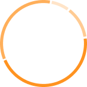
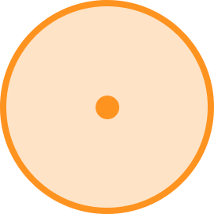

戴好你的安全帽。别嫌烦，别闹俏，保护生命最重要。
下井危险性较高，佩戴安全帽主要是为了保护头部，防止重物坠落砸伤头部。进入工作区域，必须正确佩戴安全帽，任何时候都不可摘下来。在井下进行开采作业，虽有照明设备，但有些地方能见度还是很低，还需自己带好照明灯具。
PART 1
把心脏移到头顶照亮
“
打开矿灯就是推开了空旷
天地逐渐收缩
矿工们已变成忙碌的人猿
手中舞动的铁器，发出极具破坏力的光
轰隆隆开动的皮带机
将地心的苍茫运往远方。
一个人的冥想暂时还没修炼为精炭，
几个地质年代的冥想已经被切割开采。
地心里的祖国狭长、乌黑
把心脏移到头顶上照亮，
地心深处遍布着哆哆嗦嗦的光芒
”
我国是世界上最早利用煤炭的国家，
而煤矿工人是连接我们与煤炭的桥梁。
在地心深处沉默的煤炭
在他们的劳动中幻化成解决我国主体能源需求和工业原料要求的黑金，
机遇与挑战并存恰恰给这个远离尘嚣的行业蒙上一层神秘面纱。
煤矿是高危行业，地下生产作业的环境特殊，空间狭窄黑暗，高温潮湿，地质条件复杂多变，生产过程中的事故隐患十分严重。而且员工劳动强度大，劳动协调动作要求高，任何违章等不规范行为和施工质量管理不善，都可能导致事故发生。
《煤矿安全规程》严格规定了入井人员劳动保护用品使用要求。煤矿工下井前要穿戴好相应的防护用具，严防死守一切安全隐患。
戴好安全帽
戴好你的安全帽。别嫌烦，别闹俏，保护生命最重要。
下井危险性较高，佩戴安全帽主要是为了保护头部，防止重物坠落砸伤头部。进入工作区域，必须正确佩戴安全帽，任何时候都不可摘下来。在井下进行开采作业，虽有照明设备，但有些地方能见度还是很低，还需自己带好照明灯具。
换上工作服
工作服，俗称窑衣，能防静电。一般采用厚棉帆布制成，这种布料结实耐磨，柔软舒适，吸湿透气，具有特别好的安全防护效果。
井下工作环境较为复杂，能见度较低，矿工工作服上的反光条，能够反馈工友的位置，对井下作业人员具有警示作用。
戴好手套
手部是较易受到伤害的部位，矿工需要根据个人工作的性质选用相应的保护手套。戴好防护手套可保护双手免受于材料、热量、工具和机械设备的伤害。
确认携带自救器
自救器是井下发生火灾、瓦斯、煤尘爆炸、煤与瓦斯突出时，入井人员随身携带的一种防止有害气体中毒或缺氧窒息的呼吸防护用品。其主要目的是当煤矿发生事故时，矿工可以戴着它通过充满有害气体的巷道快速离开灾区。
自救器携带应挂在腰带身体的前方，避免磕碰损坏自救器，也方便灾变及时开启自救。
穿上矿工胶靴
矿工胶靴，劳保鞋的一种，是为了保护足部足趾安全免受伤害，同时具有防水，防滑等功能。
井下有积水、采矿尖石等，矿工胶靴是矿工必备的防护用品之一。
参加班前会准备下井
煤矿工作的特殊性，下井前必须参加班前会安全教育。班前会主要布置当班的生产工作任务、作业现场存在的不安全隐患和本班应注意的安全事项。
不接受班前会教育，是不允许下井的。而且，开完会后，要进行宣誓，宣誓的内容各个公司不一，内容大都是强调安全的。
按安全操作规程有序下井
井工煤矿煤层埋藏较深，必须掘进到地层中进行采煤，矿工们需要下到井下进行作业。
地面到地下的矿井运输设备主要为以下三种，从右至左依次为矿用索道（也称"猴车"，用于矿井斜巷、平巷）、罐笼（用于矿井斜巷、平巷）和巷道人车（用于立式矿井）。
到达工作面开始日常工作
我国矿工工作时间主要为“三八制”，一次下井通常需要完成八小时及以上的连续工作。矿下阴暗、潮湿、噪声大、能见度低，且工人在矿面工作时会遇到棱角锋利的矸石，因此要格外小心，注意安全。
特种工
非特种工
等级
专业
“下井”是煤矿工人作业的特殊打开方式，
井下狭长黝黑又遍布着危险的地道是他们每日工作的场所。
面对恶劣的环境与工作中潜藏的风险，
煤矿工人的生活保障情况却并不乐观。
不同煤矿工种的月薪水平
经调查，我国绝大部分煤矿工种的平均月薪低于全行业平均月薪，煤矿工人中无带薪休假的比例高达78.4%。
*左图为不同煤矿工种的平均月薪（2015年）。井一、井二分别为井下一线、井下二线简称。
煤矿工人作业时间长、劳动强度大，
又由于作业面条件恶化或自然灾害等影响，
在工作过程中极易发生安全事故，
严重威胁到生命安全。
煤矿工一生中遭遇矿难的机率 ≈ 1/6855
由于我国煤矿地质条件复杂，瓦斯、水、火等灾害时刻威胁矿工健康和生命安全。2022年共有518位矿工丧生于矿难，平均约6855名在册矿工中就有一位矿工因工罹难。
当偶发事件不再是个例，
鲜活生命的流逝，让矿难带给世人的警醒更为振聋发聩。